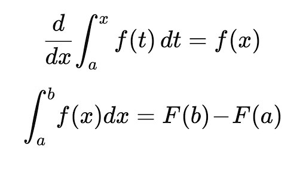
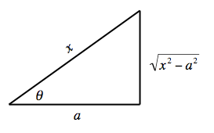

Resources
General Math2B Information: Course syllabus, suggested homework problems, algebra/trig review materials, sample midterms and finals, link to common final info.
Instructor
Peter McHale

Office Location: 2636 Biological Sciences III
Office Hours: TuTh 9am - 11am
Teaching Assistants
Hua Lin (44360)
Tutoring Location: RH 594
Tutoring Hours: M 11-12, 3-4; Tu 3-4; F 11-12
Henry Sheng (44370)
Tutoring Location: RH 594
Tutoring Hours: W 9-10am; Th 9-11am, 2-3pm.
Quizzes
Exams
Lectures
L01: 4.9 Antiderivatives
L02: 5.1 Areas and distances

L03: 5.2 Definite Integral
L04: 5.3 Fundamental Theorem of Calculus

L05: 5.4 Indefinite Integral and the Net Change Theorem
L06: 5.5 Substitution Rule
L07: 6.1 Areas
L08: 6.2 Volumes

L09: 6.5 Average value of a function; Sample Midterm #1
L10: 7.1 Integration by parts
L11: 7.2 Trigonometric integrals
L12: 7.3 Trigonometric substitution

L13: 7.4 Integration by partial fractions
{kind=link}
Webwork
Go to the main Webwork page and select your class and course number to access the login page. Your login is your UCInetID (lowercase) and your password is your UCInetID password.
If you cannot access Webwork, for whatever reason, use the help form at the main Webwork page or email these guys. Please do NOT email the instructor or TA if you can't access Webwork. Such emails will be ignored.
To Access the Webwork site from off campus or student housing you need to install and use the VPN client software. Do not use the WebVPN link.
Before starting the assignment, please look here for instructions on how to enter answers in Webwork.
WWK assignments alone are not sufficient preparation for the exams (which will often have questions that are more theoretical than typical WWK questions). Attempting the suggested homework problems from Stewart and attending lecture are essential to do well in quizzes and exams. Review each WWK assignment soon after it is posted, and begin doing it early.
Good luck!
Piazza
We will use Piazza for discussion of class material. Rather than emailing questions to the instructor/TAs, please post your questions on Piazza. The system is highly catered to getting you help fast and efficiently from classmates, the TA, and the instructor.
Piazza questions and answers are like Wikipedia: anyone can contribute to them. I encourage you to collaboratively edit questions and answers because these are far easier to read and comprehend than a long thread of comments.
If you have a question about one of the Textbook problems, please write out the question in full (in addition to supplying the question number). This will elicit a speedier reply from Instructors/TAs who don't have the Textbook to hand.
Please do not use Piazza as a medium to haggle for more marks in quizzes and exams. Instead, please follow the procedure outlined below under "Regrading Policy".
Please sign up at: https://piazza.com/uci/winter2018/4436044370. You will be asked to enter a "Class Access Code", which is "44360 & 44370" (do not enter quotation marks).
Miscellaneous
Notable dates
MLK Day (holiday) Mon 15 Jan
Miderm #1 Wed 31 Jan (in class)
Presidents' Day (holiday) Mon 19 Feb
Midterm #2 Fri 23 Feb (in class)
Final Sat 17 Mar 1.30 - 3.30pm. Room will be announced later on WebSoc.
LARC
The LARC Leader(s) assigned to Math2B are Mira Asad , Quinn Korematsu, Sharis Manokian, and Qianxun Xu. Times and locations of LARC tutorials are:

When writing an email to the Instructor and TAs, please retain the history of any prior email exchanges by finding the last email that you received from us (in that thread) and hitting the "Reply" key in your email client. This will allow us to recall who you are when we receive your email, and answer your question more promptly. Otherwise the email will languish in our Inboxes until we find time to go to the trouble of figuring out why the email was sent...
Please make sure that any question you email to the Instructor or TA does not already have an answer on the class website. Emails containing questions that could have been answered by paying attention to the class website will be ignored.
Grading
Final 40%
Midterm 20% X 2
Webwork 10%
Quizzes 10%
Students often wonder if there are ways to game the system. Not really. There will be no opportunity for extra credit. More importantly, requests to alter grades will be viewed as an infraction on the part of the student of the university academic honesty policy. It is against University policy to assign a grade based on what the student wants. The grade assigned is the grade that the instructor is obliged to record.
Try not to worry about letter grades. Instead, focus on learning the course material. This is a much better investment of your time.
Make-up policy
No make-up quizzes will be given but the lowest quiz will be dropped.
It is expected that students will make every effort to attend exams at the scheduled times. Requests for make-ups will be ignored unless:
- there is a verifiable emergency, which prevents the student from taking the exam at the scheduled time. Such emergencies include, but are not limited to, serious illness, death of immediate family member, or serious accident.
- there is a timely written petition for a make-up accompanied by verifiable documentary evidence.
Tips
Please read the indicated sections of the text in advance of the lecture and try to go through the examples presented in the text.
The purpose of coming to lectures is more to listen to what's being said rather than to copy what's on the board, especially since the lecture notes are being posted on the class website.
Ask questions in class and ask questions on Piazza.
Some students try homework problems and read the lecture notes or the text only if they get stuck on a question. A better plan is to have a decent grasp of the text and/or lecture notes before tackling the problems.
This course aims to train you to think logically. Write your answers in a step-by-step fashion, where each step is a logical consequence of the preceding step, i.e. the steps are connected by symbols/words such as 'implies', 'therefore', 'thus'. Often the first step is a 'definition': something that we declare to be the case, and from which we logically derive the solution to the problem.
Here's a way to test whether your answer is logical. Ask yourself two questions:
* Will I understand what I've written in a few weeks?
* Could someone else understand what I've written without my being there to help explain it?
If the answer to both questions is yes, then you can be confident that your answer is logical and, most likely, a valid solution to the problem.
The best way to prepare for the exams is to do all the homework questions, write out the correct solutions to questions you got wrong in the quizzes, write out all the examples presented in the lecture notes (even those not covered in class), and do the previous exams.
A tip about taking exams: when the exam starts, read through the exam questions, identify the easy ones, and do those first.
Succeeding at this course requires an investment of your time: you should be spending at least as much time studying outside of lectures/discussions as you spend inside, e.g. 5 hours per week in lectures/discussion and 8 hours per week at home or in the library absorbing the concepts and doing the homework questions and practice exam questions. Treat college like a full-time job.
Re-grading
A request to regrade a particular problem will only be considered if an egregious grading error has occurred and will prompt re-consideration of the entire script, which may result in the overall grade going down. Regrading will NOT be considered once the graded script leaves the classroom. Return the script to your TA immediately when you see the grading mistakes. Your TA will be responsible for regrading of homeworks/quizzes and the instructor will take care of regrading exams.
Enrollment questions
Contact the Math Dept Undergraduate Program Coordinator, Michael Vo, at (949) 824-6770 or myv@uci.edu or 340B Rowland Hall.
Academic Dishonesty Policy
Academic dishonesty will be reported to the Academic Integrity Administrative Office for disciplinary action. Students found guilty of academic dishonesty are subject to penalties ranging from loss of credit for work involved to a grade of F in the course to suspension or probation. The academic dishonesty policy will be enforced in all areas of the course, including quizzes and exams.
Academic dishonesty includes, but is not limited to: copying answers from another student, allowing another student to copy your answers, communicating exam answers to other students during an exam, attempting to use notes or other aids during an exam, or tampering with an exam after it has been corrected and then returning it for more credit. If you do so, you will be in violation of the UCI Policies on Academic Honesty. It is your responsibility to read and understand these policies. You need to avoid even the appearance of impropriety on your exams – keep your eyes on your own exam and do not hold your exam up to look at your answers because students behind you can see your answers.